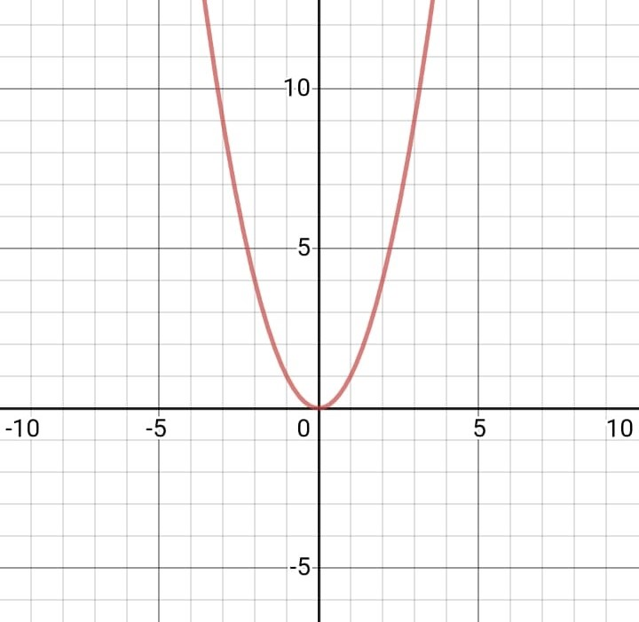
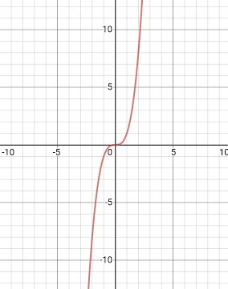
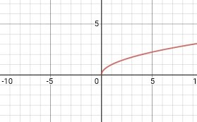

\(f(x) = x\)

\(f(x) = x^2\)

\(f(x) = x^3\)

\(f(x) = \sqrt{x}\)

\(f(x) = 1/x\)
.jpeg)
\(f(x) = E(x)\)

\(f(x) = sin(x)\)

\(f(x) = cos(x)\)

\(f(x) = tan(x)\)
Definition: Une fonction est une application, une correspondance ou une relation, d’un ensemble A (dont les éléments sont les antécédents) vers un ensemble B (dont les éléments sont les images) tel que chaque élément de A a une image unique en B.
Explication: L’ensemble A est aussi appelé l’ensemble de départ et l’ensemble B, l’ensemble d'arrivé. En générale l’ensemble A est représenté par des éléments ‘x’ , et l'ensemble B par des éléments ‘y’.
La fonction \(f\) est un procédé qui à tout nombre réel \(x\) (l’ensemble A: les antécédents) associe un seul nombre réel \(y\) (l’ensemble B: les images). \(x\) s'appelle la variable. \(y\) s'appelle l'image de \(x\) par la fonction \(f\) et se note \(f(x)\). \(f\) est la fonction et se note: \(f:x ↦ y\). On note aussi \(y = f(x)\).

Voici quelques exemples des procédés permettant d'associer un nombre à un autre nombre:
Note: Dans un fonction un antécédent n’a qu’une seule image. Mais deux ou plusieurs images peuvent avoir le même antécédent.
Diagramme: Voici l'exemple de quelques fonctions qu’on rencontre assez souvent:
\(f(x) = x\)
\(f(x) = x^2\)
\(f(x) = x^3\)
\(f(x) = \sqrt{x}\)
\(f(x) = 1/x\)
\(f(x) = E(x)\)
\(f(x) = sin(x)\)
\(f(x) = cos(x)\)
\(f(x) = tan(x)\)
Regardez la chaînes des vidéos:
Ou regarder les vidéos suivants:
Qu'est-ce qu'une fonction ? [de 0:53 jusqu’à la fin]
Aspect algébrique [de 0:00 jusqu’à la fin]
Définition [de 0:00 jusqu’à 0:22 puis de 3:30 jusqu’à 7:57]
Notion de fonction [de 0:11 jusqu’à 2:37]
E(x) [de 0:00 jusqu’à 4:57]